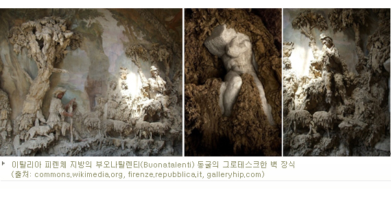

일러스트는 우리 주변에서 흔하게 볼 수 있다. 매일 들고 다니는 핸드폰 케이스, 음료와 식품, 셔츠, 책, 노트 등 밋밋함을 덜기 위한 모든 곳에 존재한다. 어디에나 있지만, 그 가치는 제대로 인정받고 있지 못한 셈이다. 그 쓰임도 제품을 포장하고 구매를 독려하는 형태가 대부분이다. 사람들에게 인기 있는 일러스트도 대부분 특정 영화, 만화, 애니메이션 캐릭터다. 대중의 인식은 거기서 머물러있다. 그라폴리오는 이런 존재 방식에 의문을 제기한다.